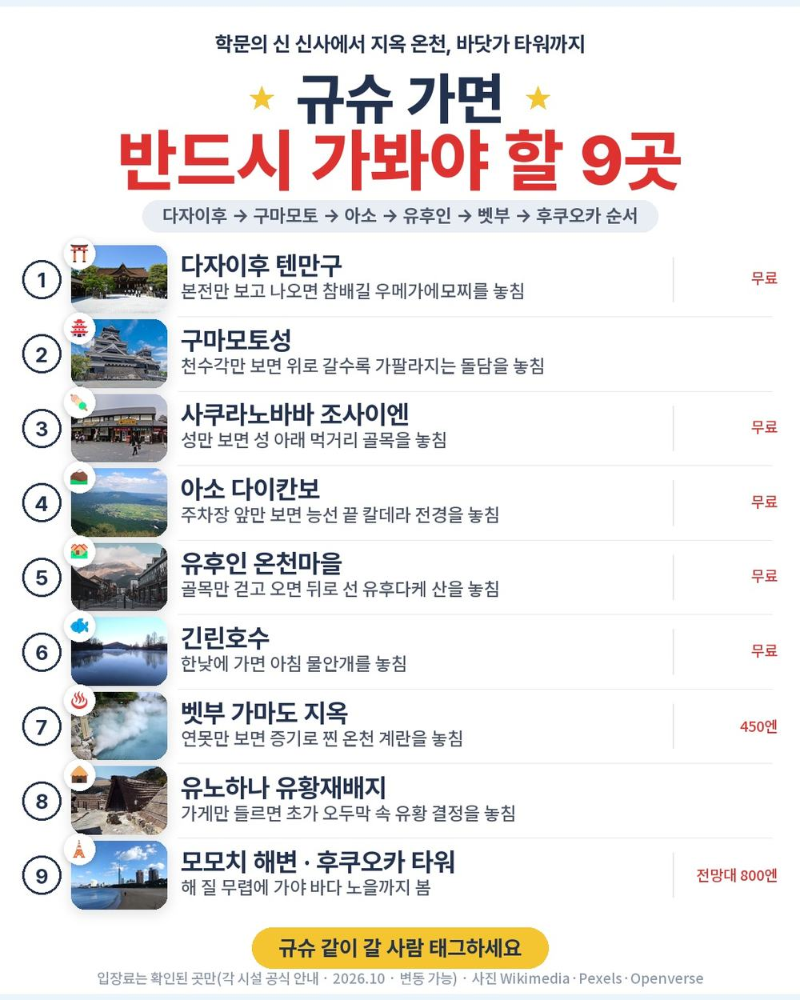
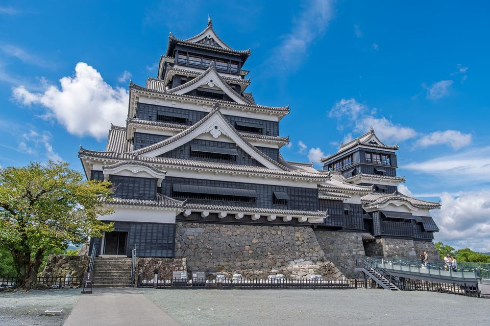
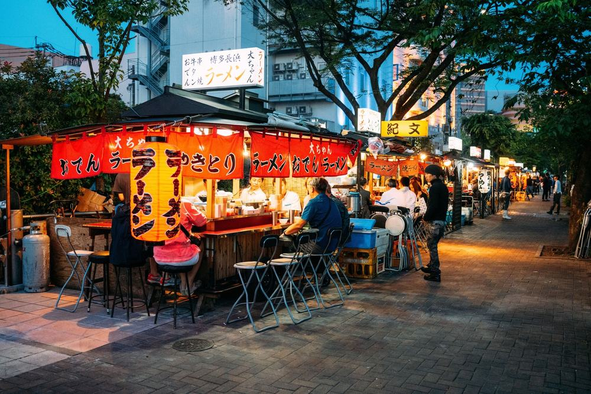
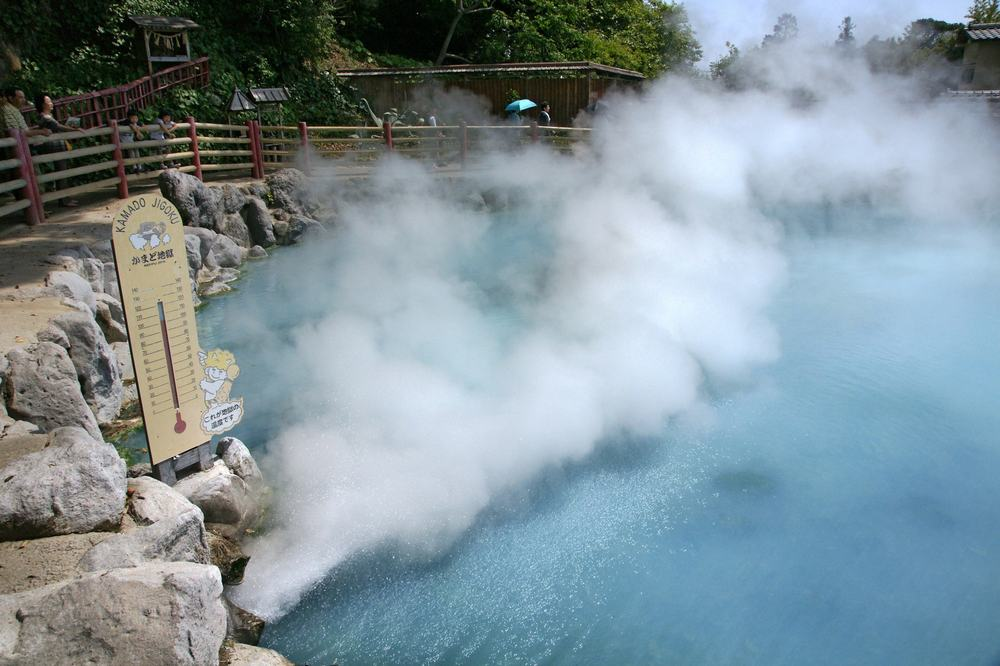
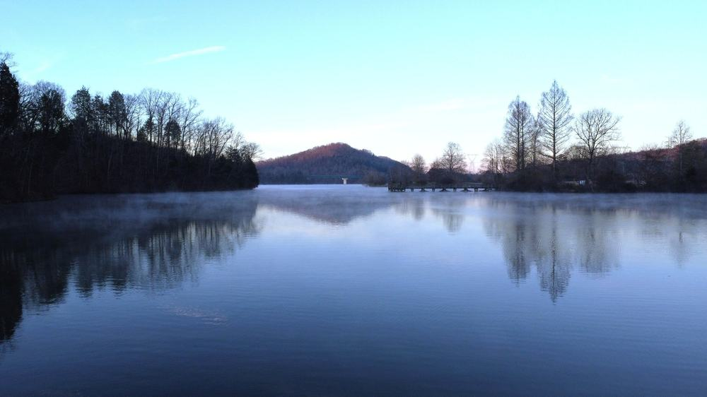

후쿠오카 효도여행 2박 3일 하나투어 패키지 여행 59만 9,900원, 대구에서 바로 뜨는 구마모토성·아소·벳부

대구에 사시는 부모님 규슈 여행을 알아보면 인천이나 김해 출발 상품이 대부분임. 공항까지 가는 길이 여행의 반이 되기 쉬움.
그러다 하나투어 상품을 원문까지 읽어 봄. 대구공항에서 바로 뜨는 직항에, 59만 9,900원 안에 가이드·기사 경비까지 들어 있음. 다자이후, 구마모토성, 아소 다이칸보, 유후인, 벳부 가마도 지옥, 모모치 해변을 2박 3일에 돎. 대신 첫날과 마지막 날 저녁은 직접 챙겨야 함.
결론 — 추천. 대구 직항에 규슈 대표 명소와 료칸형 온천 호텔 하룻밤, 가이드 경비까지 한 값에 든 일정임. 다만 저녁 두 끼를 직접 챙기기 번거로운 분, 버스가 긴 하루가 힘든 분, 인원이 적어도 인솔자가 꼭 있어야 하는 분은 아님.
59만 9,900원이 어디에 들어갔는지, 현지에서 더 내는 돈은 얼마인지 하나씩 뜯어봤음.
| 항목 | 내용 |
|---|---|
| 가격 | 1인 599,900원 (성인 · 소아 동일 · 11월 출발 기준) |
| 여행사 | 하나투어 |
| 항공 | 트리니티항공 직항 · 대구 17:50 → 후쿠오카 19:00 / 후쿠오카 20:00 → 대구 21:15 |
| 숙소 | 하카타 시내 호텔 1박(크로스 라이프 하카타 야나기바시 예정) + 오이타 료칸형 온천 호텔 1박 |
| 일정 | 2박 3일 · 전용 버스 · 한국어 가이드 · 식사 5회 · 쇼핑 1회 · 선택관광 없음 |
| 가는 곳 | 다자이후 텐만구 · 구마모토성 · 사쿠라노바바 조사이엔 · 아소 다이칸보 · 유후인 긴린호수 · 벳부 가마도 지옥 · 유노하나 유황재배지 · 모모치 해변 · 후쿠오카 타워 |
▶ 내 출발일 오늘 기준 요금 확인 (제휴 링크 · 예약 시 수수료를 받으며 가격은 같습니다)
▶ 10월 19일 기준 후쿠오카 패키지 최저 59만 9,900원부터 — 출발일별 값 한 화면에: 비교 페이지
| 순서 | 다루는 것 | 한 줄 결론 |
|---|---|---|
| 1 | 구성 뜯어보기 | 가이드 경비 포함, 선택관광 없음, 저녁 두 끼는 자유식 |
| 2 | 일정 살펴보기 | 2일차가 가장 긴 날, 밤엔 온천과 가이세키 |
| 3 | 자유여행 VS 패키지 | 직접 짜면 약 72만원 | 항공권만 1인 36만 3천원 |
1. 구성 뜯어보기
요약 — 대구 직항 왕복·호텔 2박·식사 5회·명소 입장·한국어 가이드·전용 버스·여행자보험이 들어 있음. 가이드·기사 경비(1인 3,000엔 상당)도 포함이라 현지에서 반드시 더 내는 돈이 없음.
1-1. 59만 9,900원에 들어 있는 것

포함 항목을 정리하면 이럼.
- 트리니티항공 대구–후쿠오카 직항 왕복 + 유류할증료·세금
- 하카타 시내 호텔 1박 + 료칸형 온천 호텔 1박 (2인 1실)
- 식사 5회 (호텔 조식 2 · 현지식 점심 2 · 가이세키 저녁 1)
- 관광지 입장료 · 한국어 가이드 · 전용 버스 · 여행자보험
- 가이드·기사 경비 (1인 3,000엔 상당)
관광은 이렇게 들어 있음.
- 다자이후 텐만구 + 참배길 우메가에모찌 1인 1개
- 구마모토성(천수각 내부는 불포함) · 사쿠라노바바 조사이엔 · 아소 다이칸보 전망대
- 유후인 온천마을·긴린호수 · 벳부 가마도 지옥(라무네·온천 계란 1인 1개) · 유노하나 유황재배지 · 모모치 해변 · 후쿠오카 타워 외관
선택관광 목록이 아예 없음. 현지에서 옵션을 권유받을 일이 없는 구성임.
출발일별 요금 확인하기
https://naver.me/5ulW6QwG
1-2. 호텔 두 밤

첫 밤은 하카타 중심에 새로 연 크로스 라이프 하카타 야나기바시로 안내돼 있음. 도착 첫날 저녁에 시내를 걸어 다니기 좋은 자리임.
둘째 밤은 오이타 쪽 료칸형 온천 호텔임. 저녁이 가이세키로 나오고 온천욕을 할 수 있음. 둘 다 예정 호텔이라 동급으로 바뀔 수 있고, 출발 3일 전 확정 일정표로 알려 줌.
1-3. 현장에서 더 낼 돈
| 항목 | 금액 | 비고 |
|---|---|---|
| 가이드·기사 경비 | 0원 | 상품가에 포함 (1인 3,000엔 상당) |
| 선택관광 | 0원 | 목록 없음 |
| 1일차 저녁 | 개인 | 자유 저녁 (가이드 미동행) |
| 3일차 저녁 | 개인 | 귀국 비행기 20:00 |
| 구마모토성 천수각 내부 | 개인 | 일정은 외관 관광 |
| 합계 (2인) | 0원 (반드시 내는 돈) | 상품가 119만 9,800원 그대로, 저녁 두 끼만 개인 |
두 사람이면 상품가 119만 9,800원에서 반드시 더 내는 돈이 없음. 따로 드는 건 첫날과 마지막 날 저녁, 그리고 매너팁(자율) 정도임.
1절 자주 나오는 질문
Q. 가이드 경비는 따로 내나요?
A. 안 냄. 가이드·기사 경비가 1인 3,000엔 상당으로 상품가에 들어 있음. 테이블·객실 같은 매너팁만 자율임.
Q. 쇼핑은 몇 번인가요?
A. 1회임. 3일차 공항 가기 전에 면세점 한 곳에 들름. 선택관광은 없음.
Q. 식사는 몇 번 나오나요?
A. 5회임. 2일차 조식·현지식 점심·가이세키 저녁, 3일차 조식·현지식 점심임. 1일차 저녁과 3일차 저녁은 비행기 시간 때문에 자유식임.
2. 일정 살펴보기
요약 — 1일차 저녁 도착 뒤 하카타 자유 저녁, 2일차 다자이후·구마모토성·아소 다이칸보 뒤 온천 호텔, 3일차 유후인·벳부·모모치 해변 뒤 저녁 비행기로 대구 도착.
2-1. 하루하루 어디를 가나

| 일차 | 가는 곳 | 식사 | 숙소 |
|---|---|---|---|
| DAY 1 | 대구 17:50 출발 → 후쿠오카 19:00 도착 → 하카타 호텔 → 자유 저녁 | 없음 | 크로스 라이프 하카타 야나기바시 예정 |
| DAY 2 | 다자이후 텐만구 → 구마모토성·조사이엔 → 아소 다이칸보 → 온천 호텔 | 조 호텔식 · 중 현지식 · 석 가이세키 | 오이타 료칸형 온천 호텔 |
| DAY 3 | 유후인·긴린호수 → 벳부 가마도 지옥·유노하나 → 모모치 해변·후쿠오카 타워 → 면세점 → 후쿠오카 20:00 출발 → 대구 21:15 도착 | 조 호텔식 · 중 현지식 | — |
| 일차 | 버스 이동 | 걷기 | 포함 식사 |
|---|---|---|---|
| DAY 1 | 약 0.5시간 | 적음 | 포함 끼니 없음 |
| DAY 2 | 약 5시간 | 보통 | 조 호텔식 · 중 현지식 · 석 호텔식 |
| DAY 3 | 약 3.5시간 | 보통 | 조 호텔식 · 중 현지식 |
| 합계 | 약 9시간 | - | 5끼 (호텔식 3 · 현지식 2) |
요약 — 버스 이동은 3일 동안 약 9시간, 포함 식사는 5끼(호텔식 3 · 현지식 2)임. 가장 많이 걷는 날은 DAY 2임.
2-2. 1일차 — 저녁 도착, 하카타 자유 저녁

비행기는 대구에서 오후 5시 50분에 떠서 후쿠오카에 저녁 7시에 내림. 이날 저녁은 상품에 없고 가이드도 동행하지 않음. 원문은 나카스 강변, 텐진 다이묘 거리, 돈키호테를 추천 자유일정으로 적어 둠.
호텔이 하카타 중심이라 첫날 저녁을 시내에서 해결하기 쉬움 — 공항에서 먹고 들어가도 되고 강변 포장마차까지 걸어가도 됨.
2-3. 2일차 — 가장 긴 날, 밤엔 온천

다자이후 텐만구에서 우메가에모찌를 하나씩 받고, 구마모토성으로 내려감. 성은 외관과 돌담을 보는 일정이고 천수각 안은 들어가지 않음. 오후엔 해발 936m 다이칸보에서 아소 칼데라를 내려다봄.
다자이후에서 구마모토, 아소를 지나 오이타까지 가는 날이라 버스 타는 시간이 가장 긺. 대신 그날 밤이 온천 호텔이고 저녁이 가이세키임. 무릎이 불편하신 분은 돌담 오르막 전에 가이드에게 미리 말해 두면 좋음.
2절 자주 나오는 질문
Q. 비행기는 몇 시인가요?
A. 트리니티항공 직항이고 대구 17:50 출발 → 후쿠오카 19:00 도착, 귀국은 후쿠오카 20:00 출발 → 대구 21:15 도착임.
Q. 부모님 후쿠오카 패키지로 2일차가 무리는 아닌가요?
A. 버스가 가장 긴 날이라 쉬어 가는 짐을 챙기는 게 좋음. 걷는 곳은 다자이후 참배길과 구마모토성 정도이고, 그날 밤 온천 호텔에서 쉼.
Q. 인솔자가 같이 가나요?
A. 인원에 따라 다름. 원문 안내로 4~9명 출발이면 인솔자 없이 후쿠오카 공항에서 차량 가이드를 만나 진행함. 최소 출발 인원은 4명임.
3. 자유여행 VS 패키지 | 직접 짜면 약 72만원
요약 — 같은 일정을 직접 짜면 1인 약 72만원쯤 듦. 항공권만 1인 36만 3천원임. 패키지는 가이드 경비까지 59만 9,900원이라 패키지가 덜 듦.
3-1. 같은 일정을 직접 짜면

같은 일정을 혼자 짠다고 치고 항목별로 계산해 봄. 11월 출발, 2인 1실 1인분임. 항공 말고는 추정치라 근거 열에 적어 둠.
| 항목 | 금액 | 근거 |
|---|---|---|
| 대구–후쿠오카 왕복 항공 | 363,000원 | TAE↔FUK 직항 왕복 1인 36만 3천원 (패키지와 같은 11월 출발일 · 2026-10-19 마이리얼트립 조회) |
| 호텔 2박 | 200,000원 | 시내 호텔 1박 + 료칸 1박(석·조식) 2인 1실 1인분 (추정) |
| 이동 (다자이후·구마모토·아소·벳부) | 100,000원 | 열차·버스 조합, 아소 다이칸보는 대중교통이 드묾 (추정) |
| 식사 (점심 2회) | 30,000원 | 현지식 기준 (추정) |
| 공항 이동 | 10,000원 | 공항↔하카타 지하철 왕복 (추정) |
| 여행자보험 · 유심 | 15,000원 | 3일 기준 |
| 가이드 | — | 자유여행은 없음 |
| 합계 | 약 718,000원 |
직접 짜실 분은 이 날짜 항공권부터 보세요 — https://myrealt.rip/wvXFea (마이리얼트립 제휴 링크)
3-2. 그래서 뭐가 다른가
후쿠오카·구마모토·아소·오이타 네 지역을 이틀에 도는 동선이라, 직접 짜면 이동이 가장 어려움.
- 다이칸보는 버스 편이 드물어 차가 없으면 들르기 어려움
- 구마모토와 벳부가 반대 방향이라 열차를 여러 번 갈아타야 함
- 료칸 가이세키 저녁은 따로 예약하면 값이 크게 뜀
패키지는 이 전부가 전용 버스 한 대로 붙고, 한국어 가이드가 붙음. 자유여행 계산표에 가이드 행이 비어 있는 게 그 뜻임 — 0원이 아니라 살 수 없는 것임.
3-3. 어느 쪽이 맞나
| 자유여행이 맞음 | 패키지가 맞음 |
|---|---|
| 후쿠오카 시내만 천천히 걷고 싶음 | 규슈 대표 명소를 한 번에 보고 싶음 |
| 저녁을 매일 직접 고르고 싶음 | 대구에서 바로 떠나고 싶음 |
| 버스 오래 타는 날이 싫음 | 옵션·경비 걱정 없이 다니고 싶음 |
| 료칸 한 곳에 오래 머물고 싶음 | 부모님과 길 찾기 걱정 없이 돌고 싶음 |
3절 자주 나오는 질문
Q. 자유여행이 더 싸지 않나요?
A. 이 일정은 반대임. 계산해 보면 자유여행이 약 72만원, 패키지가 가이드 경비까지 59만 9,900원임.
Q. 일본 입국 서류는 뭐가 필요한가요?
A. 원문 안내로 Visit Japan Web 등록은 필수가 아니고, 입국신고서·세관신고서를 종이로 써도 됨. 여권은 출국일 기준 유효기간 6개월 이상이 필요함.
Q. 세 명이 한 방을 쓸 수 있나요?
A. 미리 문의해야 함. 3인 1실 가능 여부는 출발 3일 전 확정 일정표 때 알 수 있고, 안 되면 2인실과 1인실로 나눠 싱글 사용료가 붙음.
마무리
정리하면 이럼.
추천함. 59만 9,900원에 대구 직항, 하카타 호텔과 료칸형 온천 호텔, 가이세키 저녁, 다자이후·구마모토성·아소 다이칸보·유후인·벳부·모모치 해변, 가이드·기사 경비까지 들어 있음. 선택관광이 없어 현지에서 반드시 더 내는 돈이 없음.
이런 분은 고르면 안 됨. 저녁 두 끼를 직접 챙기기 번거로운 분, 버스가 긴 하루가 힘든 분, 인원이 적어도 인솔자가 꼭 있어야 하는 분.
| 맞는 사람 | 안 맞는 사람 |
|---|---|
| 규슈가 처음이라 대표 명소를 한 번에 | 저녁 두 끼 직접 챙기기 번거로움 |
| 대구에서 바로 떠나고 싶음 | 버스가 긴 하루가 힘듦 |
| 가이드 경비·옵션 걱정 없이 | 적은 인원에도 인솔자가 꼭 필요함 |
걸리는 점이 있긴 한데 상품 흠이라기보다 맞는 사람과 안 맞는 사람을 가르는 조건에 가까움.
오늘 기준 출발일별 요금 보기
https://naver.me/5ulW6QwG
같은 목적지 다른 여행사 패키지, 쇼핑·선택관광·가이드 경비까지 비교
https://pkg-lab.com/go/?q=%ED%9B%84%EC%BF%A0%EC%98%A4%EC%B9%B4&utm_source=blog&utm_medium=post&utm_campaign=daily
함께 보면 좋은 글
노랑풍선 푸꾸옥 패키지 여행 62만원대, 해상 케이블카·호핑·마사지 90분까지? 현지에서 더 내는 돈
https://blog.naver.com/robotnady10/224445235909
참좋은여행 대만 패키지 여행 74만 9천원, 부모님이랑 쇼핑 없이 지우펀·101까지 가도 될까
https://blog.naver.com/robotnady10/224444408043
이 글에는 네이버·마이리얼트립 제휴 링크가 포함되어 있으며, 링크를 통해 예약하시면 일정 수수료를 받습니다. 가격은 동일합니다. 가격과 구성은 2026년 10월 19일 확인 기준이며 출발일에 따라 달라질 수 있습니다.
▶ 이 상품, 영상으로 보기 (유튜브)
▶ 후쿠오카 패키지 오늘 값 나란히 비교
▶ 같은 목적지 다른 여행사 패키지, 쇼핑·선택관광·가이드 경비까지 비교: pkg-lab.com


.jpg){kind=link}